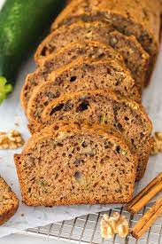

Zucchini Bread
Ingredients

- 3 eggs
- 2 cups of sugar
- 1 cup of vegetable oil
- 2 cups of raw zucchini, peeled and grated
- 1/4 tsp of baking powder
- 1 cup of chopped pecans or walnuts
- 3 cups of flour
- 3 tsp of vanilla
- 1 tsp of salt
- 1 tsp of baking soda
- 3 tsp of cinnamon
Instructions
- Beat eggs until light and foamy.
- Add sugar, oil, zucchini, and vanilla. Mix lightly but well.
- Combine flour, salt, baking soda, baking powder, and cinnamon.
- Add to egg-zucchini mixture. Stir until well blended.
- Add nutes and pour into two 9x5 loaf pans.
- Bake in a preheated 350°f oven for 60 minutes. Cool on rack.
[Back to Breads]
[Home]